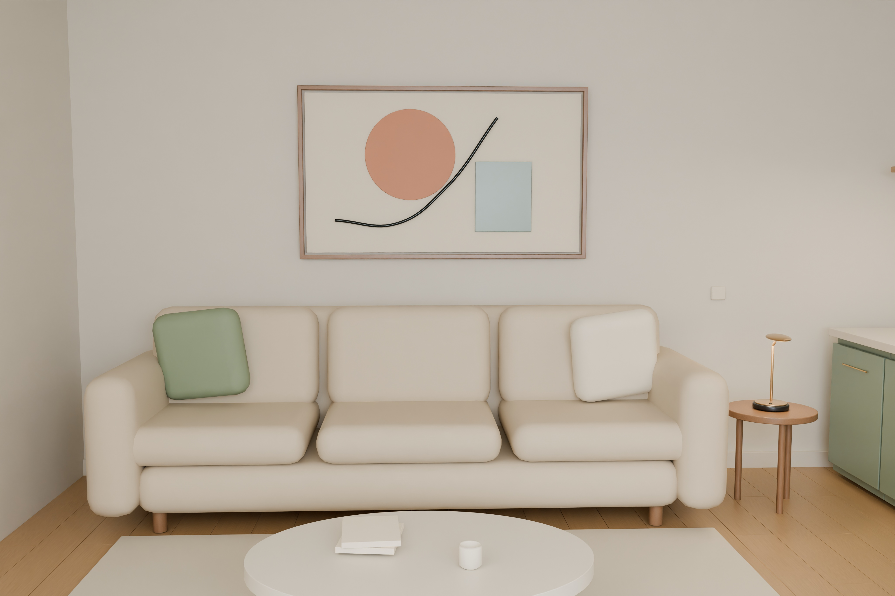
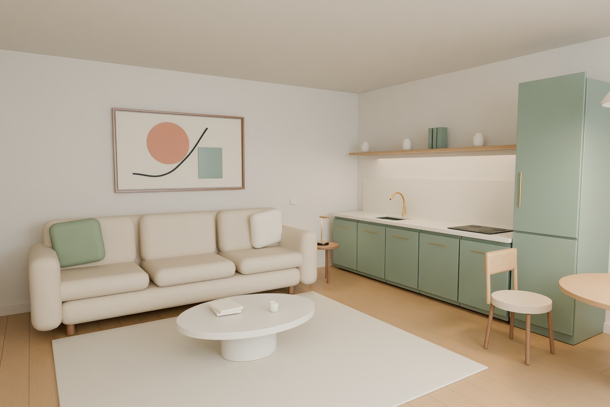
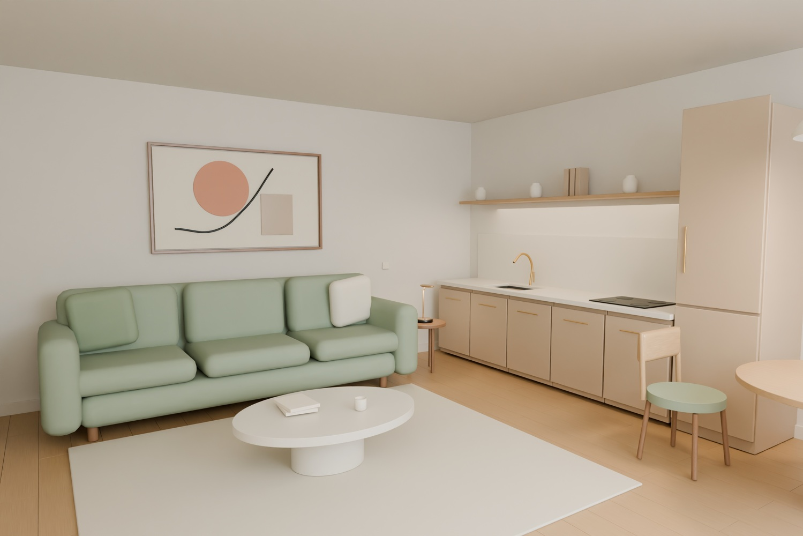
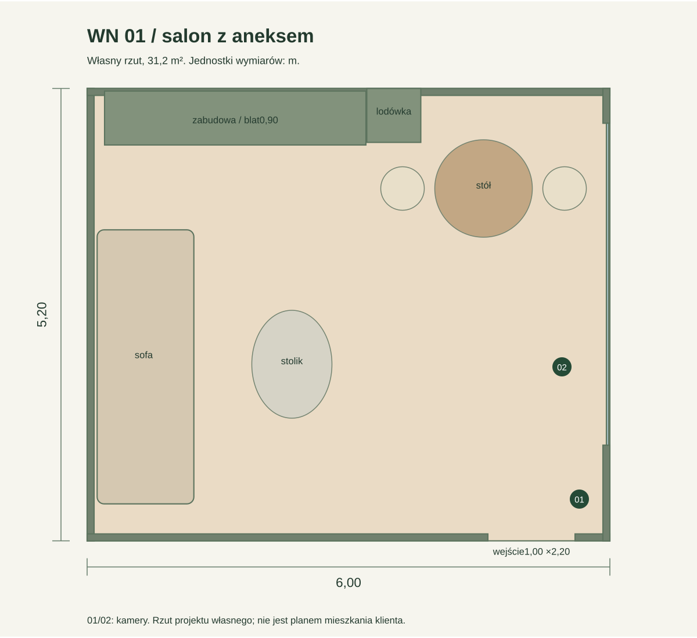

Światło, materiały
i rzeczywista przestrzeń.
Jeden własny salon z aneksem. Model w skali 1:1, dwa kadry 4K i wariant materiałów z tej samej kamery. Cała scena, meble i oświetlenie są edytowalne w Blenderze.

Ta sama geometria, inna kompozycja.
Ściany, okno, wyposażenie oraz wszystkie proporcje pozostają wspólne. Drugi kadr pokazuje strefę wypoczynku i detale wyposażenia.


Zmiana palety przy tej samej kamerze.
Wariant zmienia kolor materiału sofy i frontów. Geometria, światła, ogniskowa i transformacja kamery są identyczne, co potwierdza porównanie źródeł w raporcie QA.



Własny układ w rzeczywistej skali.
Pomieszczenie ma 6,0 × 5,2 m i wysokość 2,9 m. Model zawiera rzeczywisty otwór wejściowy 1,0 × 2,2 m, okno, kuchnię z zagłębionym zlewem, meble i detale.
- Blat kuchenny: 0,90 m.
- Stół: 0,76 m; siedzisko sofy: 0,47 m.
- Geometria tkanin, zasłon i roślin.
- Materiały proceduralne, bez zewnętrznych zdjęć.
Autorski rzut salonu z aneksem stanowi wspólną podstawę geometrii, wyposażenia oraz obu kadrów.

Pliki można rzeczywiście otworzyć.
Obie wersje .blend zostały niezależnie otwarte i ponownie wyrenderowane. Porównanie potwierdza tę samą geometrię, kamerę i światła; zmieniają się dokładnie dwa materiały.
Pełny raport natywny →Autorstwo i zakres
Jeden autorski projekt demonstracyjny o powierzchni 31,2 m²: dwa kadry oraz wariant materiałowy. Przygotowany samodzielnie do prezentacji warsztatu, nie jako płatne zlecenie klienta.
W źródle wykorzystano także rzeczywistą geometrię lampy z wcześniejszej własnej próbki produktowej.